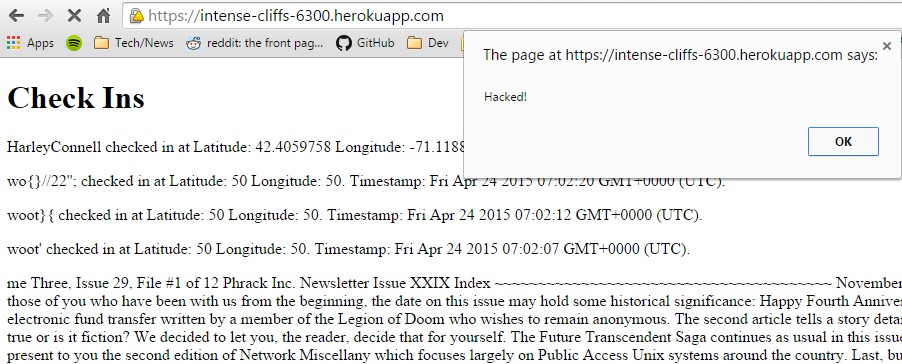
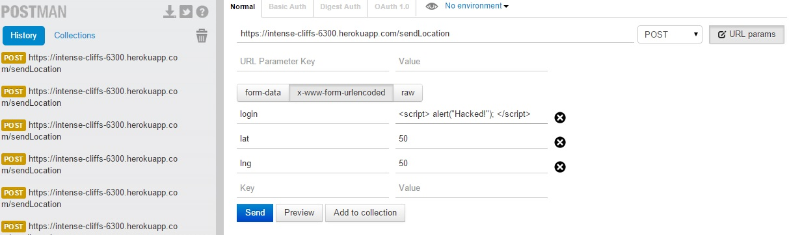
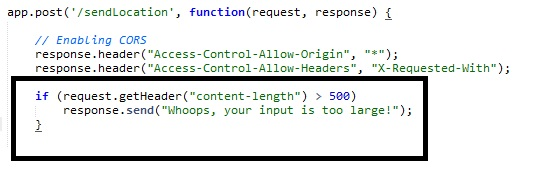
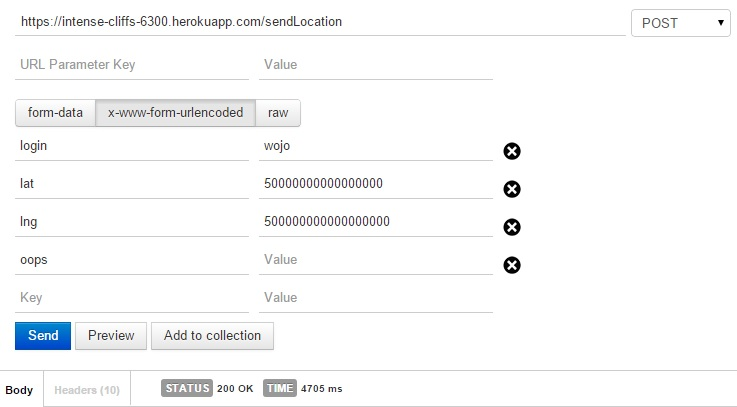
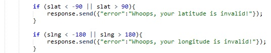

COMP20 - Security Report
Written by Henry Zhou
Today's technological world moves at a breakneck pace. From frameworks to databases to applications, there is a seemingly endless stream of new technological applications and tools that are released each day. However, with new technologies come new security and privacy issues. Holes in security garner the interest of malicious hackers who seek to capitalize on these security flaws.
The following is a report regarding gauging the security and privacy level of a web application. The web application is the Second and Third Comp20 Assignment Marauder's Map built by Jacob Caccamo. application retrieves location data from the client via a unique login, stores the data in a MongoDB database, and displays a Google Map with pins at the latitude and longitude of all other users stored in the database.
The main method of testing for security issues was making POST requests to the web application. This was conducted using the Postman - REST Client Google Chrome WebApp. A variety of different inputs were posted to the web application and their impacts were analyzed both qualitatively and quantitatively. Black box testing was utilized initially, but further analysis was conducted along with white box testing.
Testing environment:
Most if not all security issues that arose were directly caused by malicious or mismanaged user input. For example, user input could be used to inject code that would run on other user's browsers. The consequences are as open ended as the code; injected code from an outside source range from annoying popups to making a website completely inaccessible.
Location: GET '/' API
Description: Cross site scripting is totally undefended against by the web application. Attacks could be executed by writing a Javascript script as an input field of the POST API. The GET '/' API then prints out all the fields of each document in the web app collection on the client browser. The effect is any Javascript contained in any document's field is executed by the client's browser.
Severity: HIGH Injection of Javascript from user input can have crippling impacts on a website's security and privacy. Although the extent of the XSS injected for this study was relatively harmless, Javascript can easily be used maliciously. Examples include redirecting users that load the script to malicious webpages, which may themselves have malicious Javascript. Such Javascript can be used to steal sensitive information stored in the client's browser, such as login information for websites. With a user's login information, the hacker can use this information to access user accounts with personal information such as a person's name, address, and phone number. However, the consequences may be far more severe if the login information grants the hacker access to a website that stores the user's social security number, credit card information, medical information, etc..
Discovery: An attack can be conducted by making a POST request with a script injected within one of the required fields in the request.
Resolution: When printing > or <, cleanse input by outputting "<" and ">" instead. This prevents "<script>...</script>" from being outputted on the user browser. Consequently, any script injected will not be injected as the browser will not execute the script since the script is contained within "<script>...</script>".
Location: POST API
Description: There is no limit explicitly set by the client or server side of the web app on the size of user input submitted. Consequently, extremely large documents may be stored in the web app database. Generally, user input should rarely exceed even several tens of bytes as only login (string), lat (float), and lng (float) are used per document. However, a very large string can be stored in the login field of the user input and be stored in the database. This presents a large security issue as this exploit can be used to maliciously affect website performance.
Severity: HIGH
There is definitely a direct correlation between the time it takes to execute the sendLocation API as evidenced in the examples below.
Consequently, it is fair to extrapolate that when scaled, the effects of overloading the server on purpose can severely slow down
the web application. This can cause other effects such as crash the server due to the massive sizes of requests. The impacts would be
especially noticeable when an attack is scaled 10x, 100x, 1000x ... etc.
Also, the fact that no size limit exists goes hand in hand with XSS attacks. The result is very sophisticated scripts can be written and run
on user's browsers, whereas a limit could prevent a longer, more complicated and harmful script from being injected in the first place.
Although load times are also dependent on a user's machine and internet connection speed, generally the larger the file that is sent, the more
time is takes a computer for it to load relative to itself. Consequently, it is extremely important to provide a limit to user input
not only from a security/privacy perspective but also performance.
Discovery: This issue was discovered when making POST requests with extremely large user input. A large text file (~92kb) would be stored within the login field of the user input. The login would then be slightly edited to store another unique document of extremely large size in the database. The process was repeated numerous times until the size of the response exceeded one MB.
Resolution: One easy solution is to check the size of the request. A simple way to do this is to access the "content-length" field of the request header. A reasonable limit would be bytes. This provides ample space to provide a login, latitude, and longitude for user's. 
Location: POST API
Description: The range of valid latitudes lies between -90 and 90. The range of valid longitudes lies between -180 and 180. Users however can manually make posts with latitudes and longitudes of any number.
Severity: LOW
The implications of this security hole are relatively minor. Upon making a request with invalid longitudes and latitudes, the Google Maps API
seems to parse out invalid locations on its own and those inputs are never pinned onto the Google Map. However, the invalid inputs still
take up space in the database.
Discovery: This issue was discovered when making POST requests with invalid longitude and latitude values.
Resolution: One easy solution is to check the value of the latitudes and longitudes. A simple way to do this is to write a simple conditional that checks to see if the fields are genuine.
Conclusion:
It is imperative that the two issues found whose severities were indicated HIGH be resolved immedietely. The fixes are generally simple and should not take too long. However, there may be much more security flaws with this web application than written in this report. In fact, there may be security flaws that have not yet been discovered that may someday plague this website. Consequently, it is important that websites and applications be constantly monitored in case of new types of attacks. Whether it happens to this website or another one, every website is fair game for a potential hacker. Fortunately, I would be happy to provide future security consulting services in the future and I am committed to keeping your website up and running for the benefit of both you and your users.